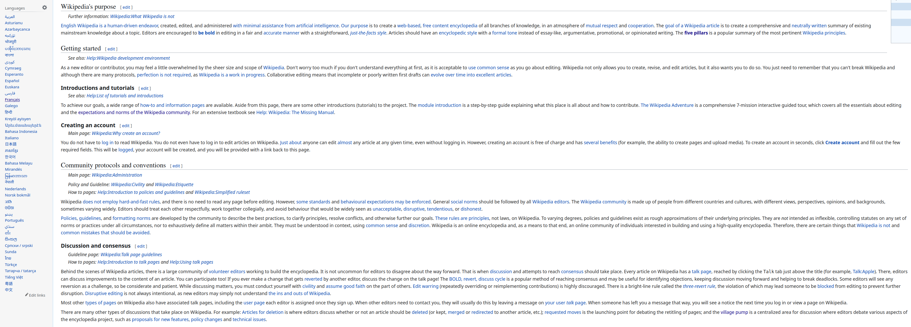
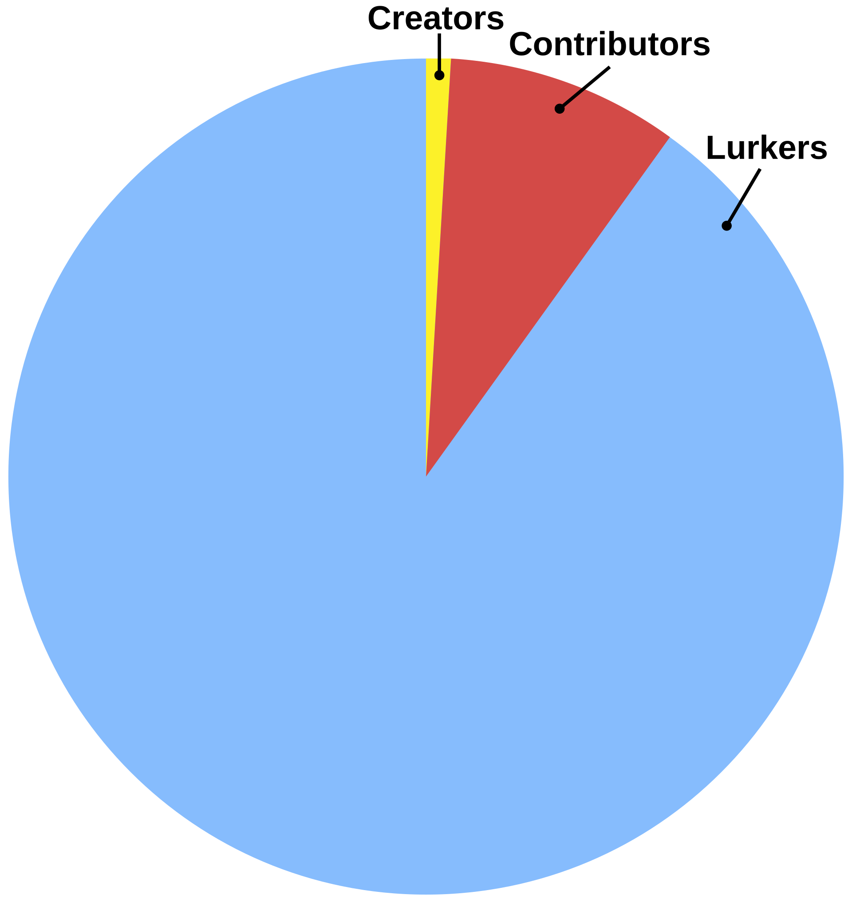

Introduction
Some reminder and useful hints for working with Wikipedia, Wikidata and the data it contains
Wikipedia is a large universe unto itself, and one that keeps growing every day. Beyond the details that were already shared by Wikimedians and in the class, this will provide some reminders and useful hints to keep in mind if you plan on doing research with Wikipedia/Wikidata and want to use data from it
Norms of Wikipedia
Wikipedia and its sister projects like Wikidata are not one large project with a single set of rules and norms, but mostly have their own sets of rules. On a very high level,, as Wikipedia sees itself as resting on five pillars, which are shared between Wikipedia projects:
- Wikipedia is an encyclopedia
- Wikipedia is written from a neutral point of view
- Wikipedia is free content that anyone can use, edit, and distribute
- Wikipedia’s editors should treat each other with respect and civility
- Wikipedia has no firm rules
As that last pillar hints at, given that rules are up for editing and refining, leading to different rules between different projects. One big example of this are the different language editions of Wikipedia: Each language edition of Wikipedia is governed by a different community of active contributors, and this means that they not only their own norms, but also their own rules. For example about the style of pages, which pages are noteworthy enough to be included in Wikipedia, what types of references are acceptable and so on.
For example, a notorious clash of cultures on Wikipedia exists between inclusionsists and exclusionists, where different viewpoints on what is noteworthy enough come into conflict, and where different language editions might have drawn different boundaries.

The English Wikipedia has a page on Contributing to Wikipedia, which outlines the basic norms of that language edition. As you can see on the left in the screenshot, many other Wikipedia language editions have their own guidelines that are linked from it, like the French one.
Participation inequality
One might assume that the amount of contributions made by different Wiki contributors follows a normal distribution, but this is not the case. Instead, there is a strong participation inequality, in which the vast majority of editing is done by a small group of highly active editors.
This effect has also been called the 1% rule or the 1–9–90 rule and has been observed for virtually any online communities in which content is produced in collaborative or crowdsourced manner, from jihadist forums, over online support groups to social networks. It states that only around 1% of users are active creators, another 9% make edits, while 90% of them only consume content (are lurkers):

By Life of Riley, CC BY-SA 3.0, https://commons.wikimedia.org/w/index.php?curid=16352118
It’s important to keep this distribution in mind when doing statistical analyses of contributions on Wikipedia.
Missing Data & Wikipedia/Wikidata
Pages that have been deleted from Wikipedia, for example for being deemed not relevant enough, will not appear in the data you can get via the different mechanisms. This means that we can not differentiate between pages that have never existed or that were at some point created but then deleted.
Given that different language editions of Wikipedia apply different criteria to decide which pages are notable enough for inclusion (and the fact that all pages are made by volunteer editors), pages might exist in some languages but not others: Eg a biography of a person might exist in the French Wikipedia, but not in the German one, or vice versa.
Lastly, Wikidata will, for example, also include items decribing people even if they have no Wikipedia biography page in any language edition.
Measuring contributions
The number of edits made by individual Wikipedia contributors is not a reliable measure of the amount of effort a person puts into editing Wikipedia.
On a very basic level, this is because for this metric fixing a single spelling error and writing a new page but only saving it once are indistinguishable. More concretely, people’s editing behaviour differs: Some contributors make many small edits, regularly submitting their edits across pages. Other contributors prefer writing large parts of texts in one go, and submit them at the end.
As an alternative, one can calculate the amount of text an edit adds or removes, which is possible to do with the data that the Wikimedia APIs provide. But even this can be fraught if not considered carefully: Some edits might clearly only add or remove content, which would appear as positive/negative amounts of text edited, this is not always the case. Instead, edits might seem neutral with respect to the amount of edits made because the amount of added and deleted text are in balance.
What are accounts?
Wikipedia offers user accounts, but those are not necessary for editing most pages, as such here are some considerations to keep in mind
- Edits can be made without an account. Historically these would be associated with the IP address of the contribution - today a temporary account is made instead
- Edits that are made using accounts do not have to be made by humans. There is a rich ecosystem of bots that automate simple edits on Wikipedia (e.g. to fix citations or spelling mistakes)
- One person might operate more than one account, if this is declared. Generally, Wikipedia prefers one person, one account and explicitly bans sockpuppetry, but if properly declared people can have >1 account, e.g. to differentiate private and professional work.
Considerations for accessing WP data
What resources do I need
The answer to this depends a lot on your research question and how you aim to access Wikipedia.
Generally, accessing text via the APIs that are provided is not computationally heavy and very doable on most consumer computers and laptops. The storage of the responses is equally not too complex.
If you plan to work with the full dumps of Wikipedia, the resource requirements are a lot bigger, both for processing the amount of data and for storing it. Plus, downloading all the data will take some time.
Lastly, Wikimedia offers a Jupyter Notebook environment called PAWS that you can use to query data through your web browser, this can also help when you run into local API limits.
API limits
Wikimedia enforces rate limits on the use of its API, which differ depending on the level of authentication and how active a contributor people are. From your own computer you will run into limitations when using these methods. PAWS (see above) can help, by querying the Wiki replicas instead.
But for really large data needs, options like the dumps might still be better.
You can find a list of all options on the Research section of the meta wiki